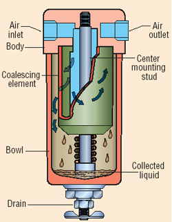
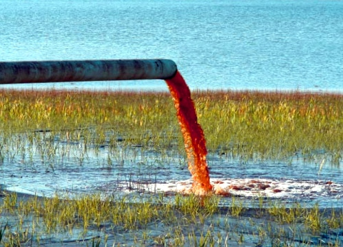
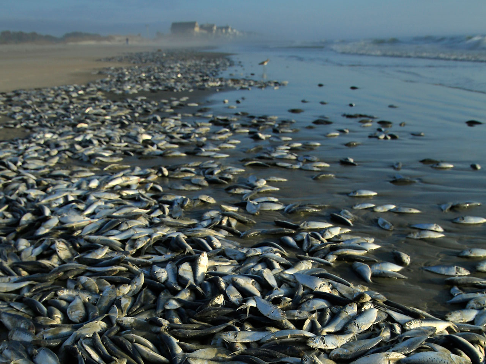

Worldwide Industrial pollution:
What is it?
A Pneumatic Filter is a device that removes contaminantes from a compressed air stream. It can be accomplished using many methods including the "media" type that traps particles, but water vapor to pass through.
An air compressor is a device that converts power (using an electric motor, diesel or gasoline engine, etc.) into potential energy stored in pressurized air (i.e., compressed air). By one of several methods, an air compressor forces more and more air into a storage tank, increasing the pressure.As it releases the air it passes through the filter cleaning the water.
This is a labeled diagram of a pneumatic filter.

Pipes from factories cause environmental disasters.
